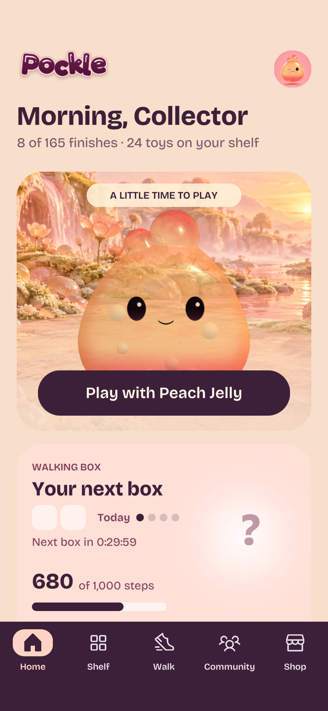
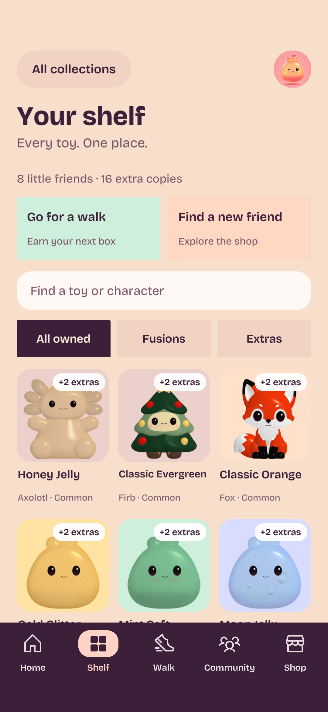
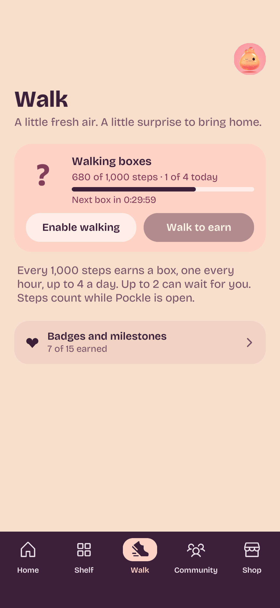
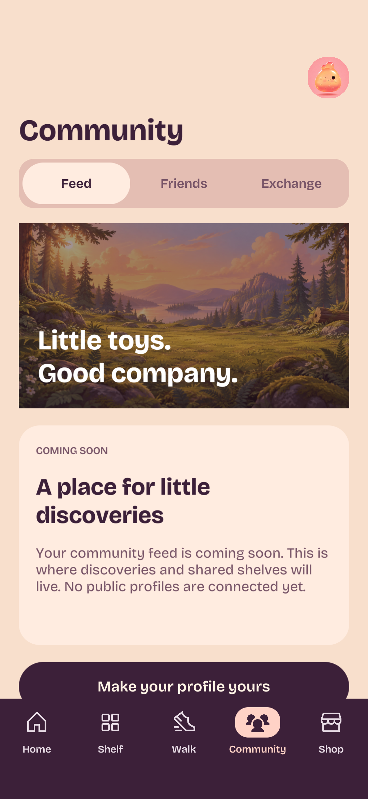
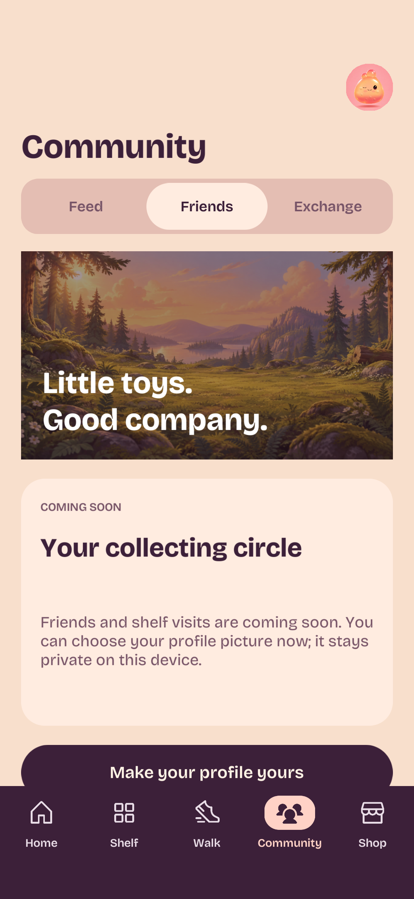
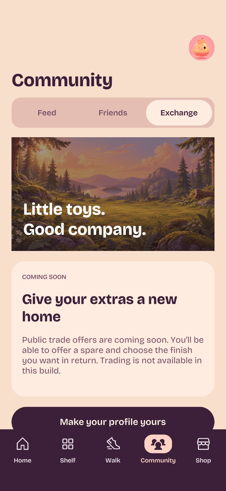
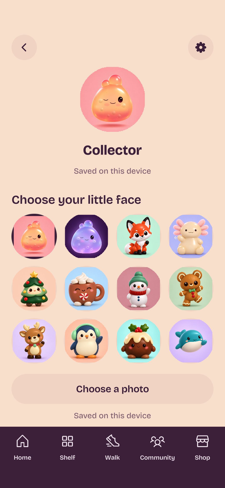
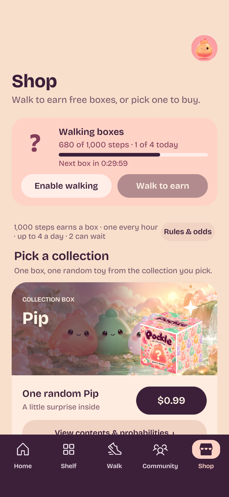
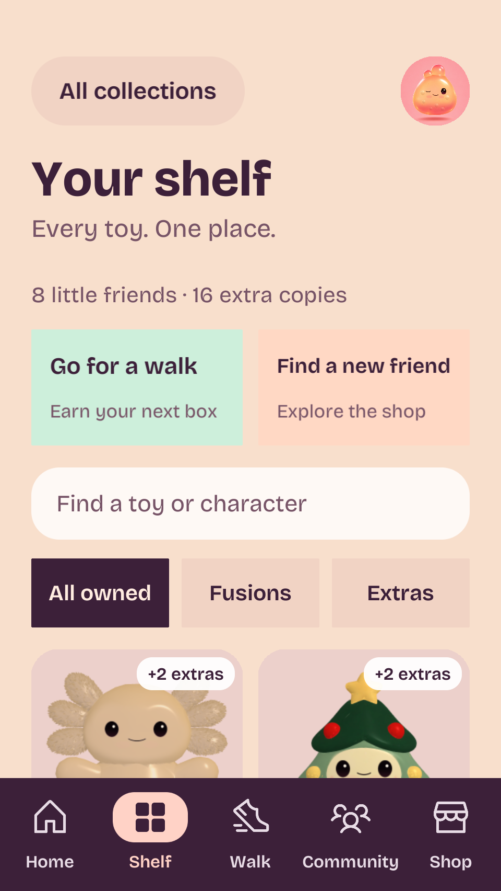

Pockle — Native navigation buildPockle · native navigation build
Real Unity HUD captures of the approved fixed bar, owned shelf and profile. Offline fixtures supply sample inventory and prices. Insets are simulated; native status-bar appearance still needs the phone.
Community services and cloud photo uploads are not enabled. Avatars are private and saved on the current device.

Home
Your owned Pockles
Walk
Community · Feed
Community · Friends
Community · Exchange
Profile · twelve avatars
Shop
Shelf · 320-point phone